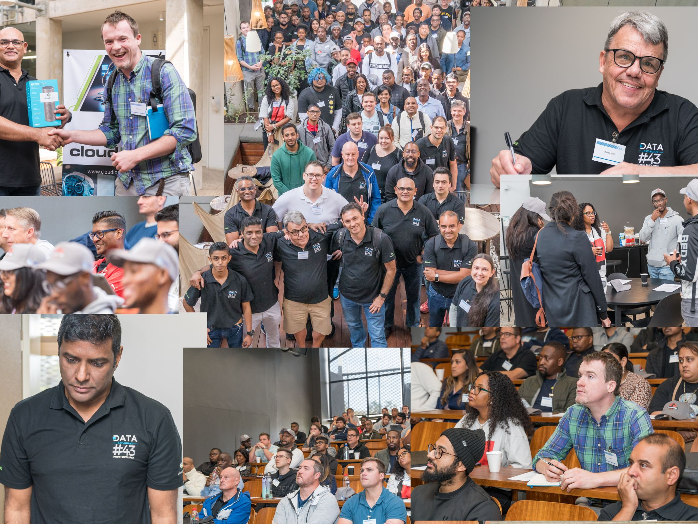

After two very successful community events in 2023 (Data Saturday, and AI/ML & Data Infusion Roadshow), we the Azure, AI/ML & Data Community Durban - are excited to announce the upcoming Data and AI Community Day Durban. If the recent events are anything to go by, then this event promises to be a memorable and impactful experience for our community.
If you’re passionate about all things data, AI/ML, and want to level up your skills, this event is a MUST-ATTEND! 📈🤖
Click on respective link for more information:
Registration
We have a limited set of seats available, so please register early to avoid disappointment:
When you have registered, please share the event with your friends and colleagues!
Speakers
This page will be updated as soon as our speakers are confirmed.
Maybe you would like to present at this event?
Expect to see thought leaders in their respective fields, Microsoft MVPs, Software Architects, etc.
We also want to showcase local talent, so if you are interested in speaking, please please contact us.
Sessions
Since the speakers are not yet confirmed, we cannot provide a list of sessions. However, expect to see sessions about:
- Data Science & Analytics
- Azure AI & ML Services
- Generative AI
- Database Development
- Real-world AI & Data Use Cases
- Streaming, Stream processing, Streaming databases.
- Powerplatform and Powerplatform Apps.
Agenda
The agenda will appear here as soon as it is confirmed. We are looking at a full day event, with presentations and networking amongst peers.
Please note that the event runs from 08:30 to 18:00, with registration starting at 08:00.
Venue
We are hosted by BETSoftware at their stunning offices in Umhlanga:
Figure 1: BETSoftware Offices
The address is: BETSoftware, 65 Richefond Circle, Umhlanga 4319.
See you there on the 27th of April 2024!
Sponsors
We are looking for sponsors to help us make this event a success. If you are interested in sponsoring, please contact us.
We are excited to announce the upcoming Data and AI Community Day Durban. If the recent events are anything to go by, then this event promises to be a memorable and impactful experience for our community.

Figure 2: Data Saturday Durban
As organizers, we are actively seeking sponsors who share our commitment to supporting our community and would like to be a part of this exciting event.
Your sponsorship would not only help us make this event a reality but also showcase your company’s dedication to our community. We have various sponsorship packages available to suit different budgets and marketing goals.
By partnering with us, you’ll have the opportunity to promote your brand to a diverse audience, gain exposure through our marketing efforts, and align your company with a positive community initiative.
If you are interested in learning more about our event and the sponsorship opportunities available, please don’t hesitate to reach out to us. We would be happy to provide you with a detailed sponsorship proposal and discuss how your support can make a meaningful impact.